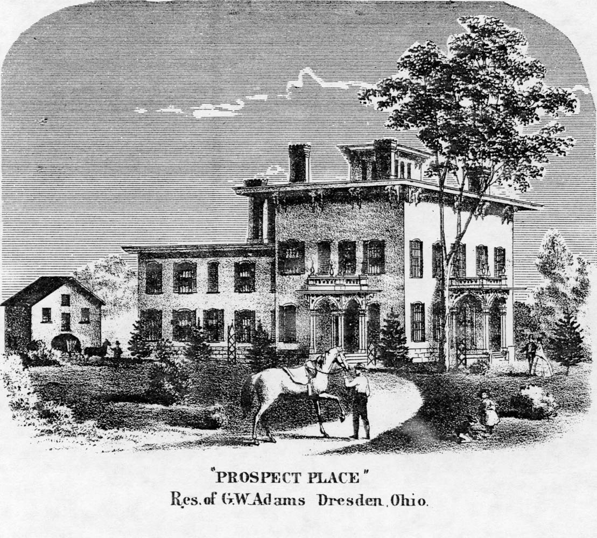
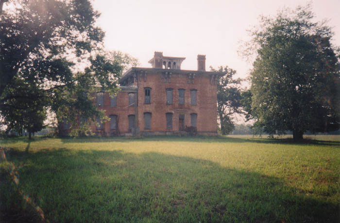
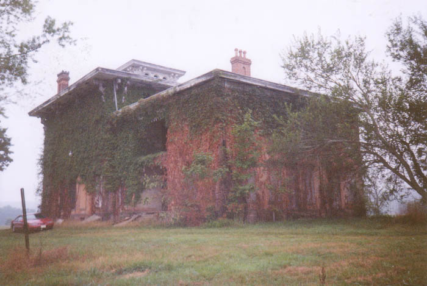
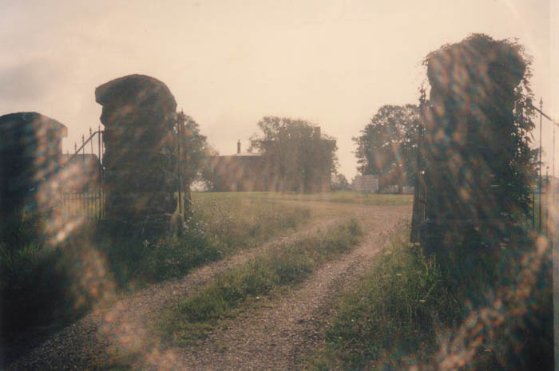
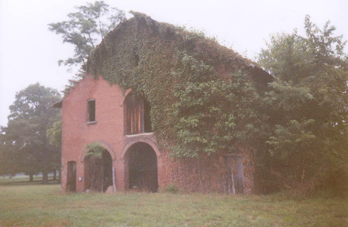
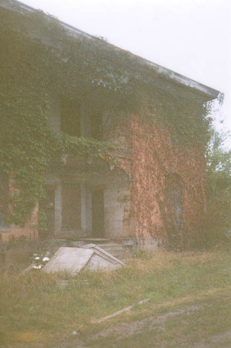

Prospect Place, also known as The Trinway Mansion, is one of the most historic buildings I've explored. It was built between 1856 and 1857 in the tiny town of Trinway, north of Dresden in Muskingum County, by George Willison Adams. He built a mill nearby and farmed the surrounding land.
Adams had left Fauquier County, Virginia, after his abolitionist views made him unpopular, and he promptly set up shop as a stop on the Underground Railroad. During the decade before the Civil War, the basement of the house was regularly used to house runaway slaves on their journeys to Canada. This is what really makes the Trinway Mansion noteworthy in a historic sense.

Adams's son John J. Adams was born in the Mansion, attended Kenyon College, and became a judge of the Fifth Circuit Court of Ohio. In a very H.P. Lovecraft-style turn of events, family descendant George Jeffrey Adams now owns the house and recently completed the process of having it restored. It is now open as a combination bed and breakfast/restaurant, with a special Underground Railroad museum in the basement and guided tours. You might even be able to participate in an overnight ghost hunt. Check out the official Prospect Place website at www.prospectplace-dresden.com.
As I've already indicated, the Trinway Mansion is haunted. One of the ghosts is said to be that of a girl who threw herself from a window during a big dinner party. If you've ever been to a long, fancy dinner party I'm sure you can understand. It makes you wonder if it was done from the lookout area at the very top of the house. I know if I were going to kill myself at the Trinway Mansion, that's where I'd do it from.
The dinner party story isn't given 100% of the time, however; some say she was sick and wandered onto the roof in a stupor, then fell off.

But that's not all. Prospect Place's other ghosts--also female--are those of a mother and daughter who lived there in the 1860s. The daughter died during a long, cold winter, and her mother caught pneumonia sitting up with her body while they waited for the ground to thaw so she could be buried. Today they remain in the mansion and are said to be especially fond of a spot in front of the fireplace--still warming themselves, maybe, after that long, sad winter.
Want to film your own paranormal experiences? The get top of the line camera
supplies! At Click Inks you can find all of your surveillance
supply needs? Need to find Security
Video Cameras or a high quality Surveillance
Camera System? For all your Surveillance
Camera needs, visit Surveillance Video! Visit today and add better
protection to your home immediately.
Yet another story tells of the hanging of a slave trapper on the third floor of the barn. His ghost haunts it, rattling farm implements on the walls and spooking livestock when there are livestock to be spooked.

After I received an e-mail from a Trinway resident describing the place, I decided to make the trip out to Muskingum County and visit the Trinway Mansion. I took my girlfriend at the time and a friend along for good luck. We did our little exploration thing in early summer 2001, right before they really got started on the renovations, so it definitely had an abandoned feel to it. Today (2004) it's a lot different.

As you can tell, it's an impressive place, reminiscent of Mudhouse Mansion in its size and creepiness. One of the coolest things about the mansion is the stone gateway down by the road. As soon as we passed through the open gate we saw the very prominent NO TRESPASSING SIGN. Not a good thing, of course, but we didn't end up having many problems.

Standing near the mansion is the enormous brick barn, which is in extremely good shape. It it two stories tall, and was built from the bricks left when George Willson Adams's first house on the site burned down. We looked inside and saw recognizable stables with some equipment still hanging on the walls. We also encountered weird sand flies that could disappear into the dirt on the ground like magic.

We finally made our entry via the recessed back porch, above which is a similar balcony area. To explore the pre-renovation Prospect Place, click below.
Prospect Place: Official Site
The G.W. Adams Educational Center at Prospect Place
Grave Addiction: Prospect Place
Back
Sources
Shipley, Tonya and Kathy Thompson. "Skeptic, Believer Visit Area's 'Haunted Places.'" Zanesville Times Recorder, 23 Oct. 2005.